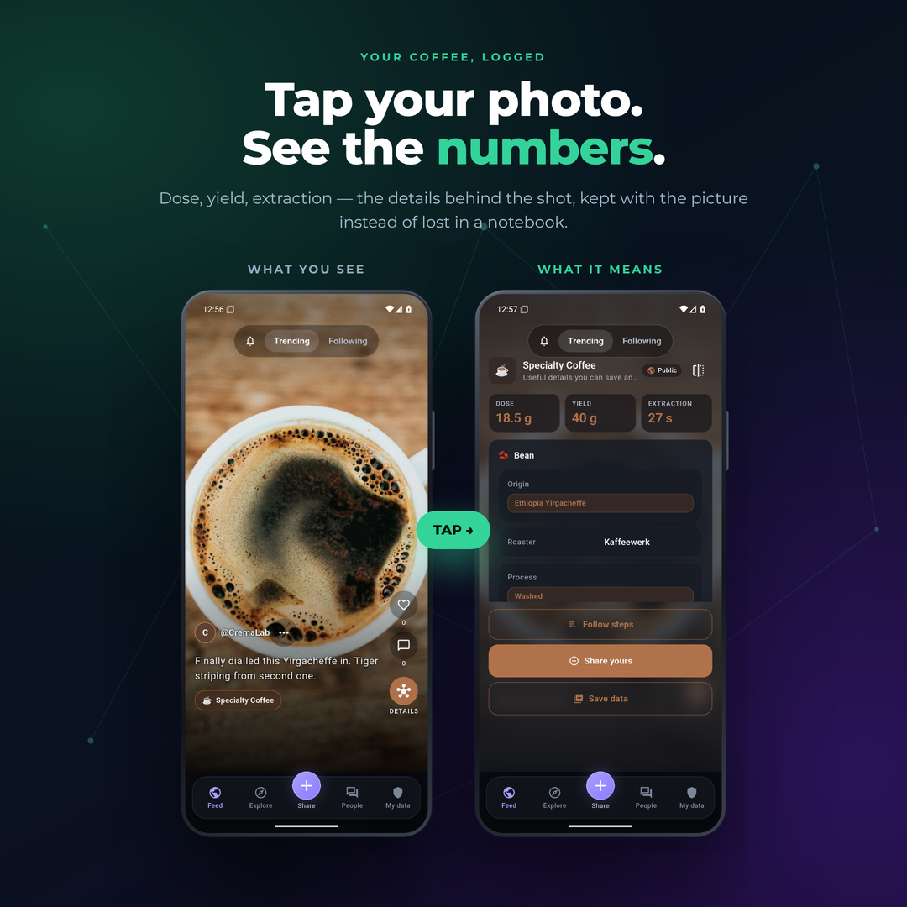
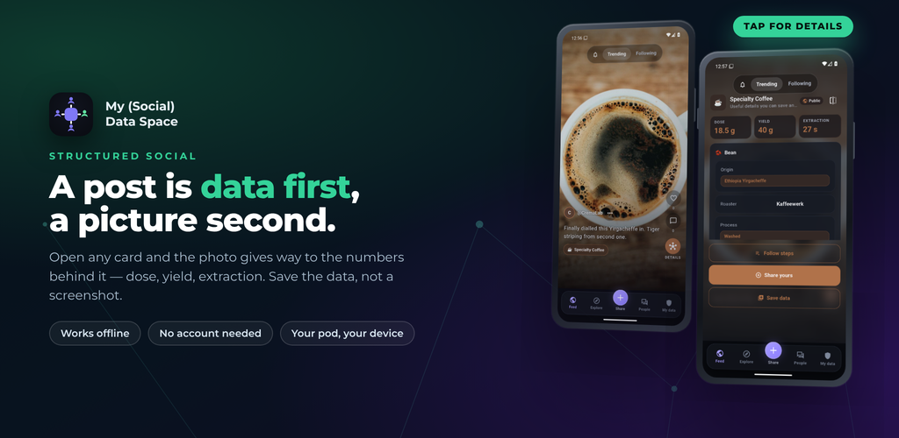
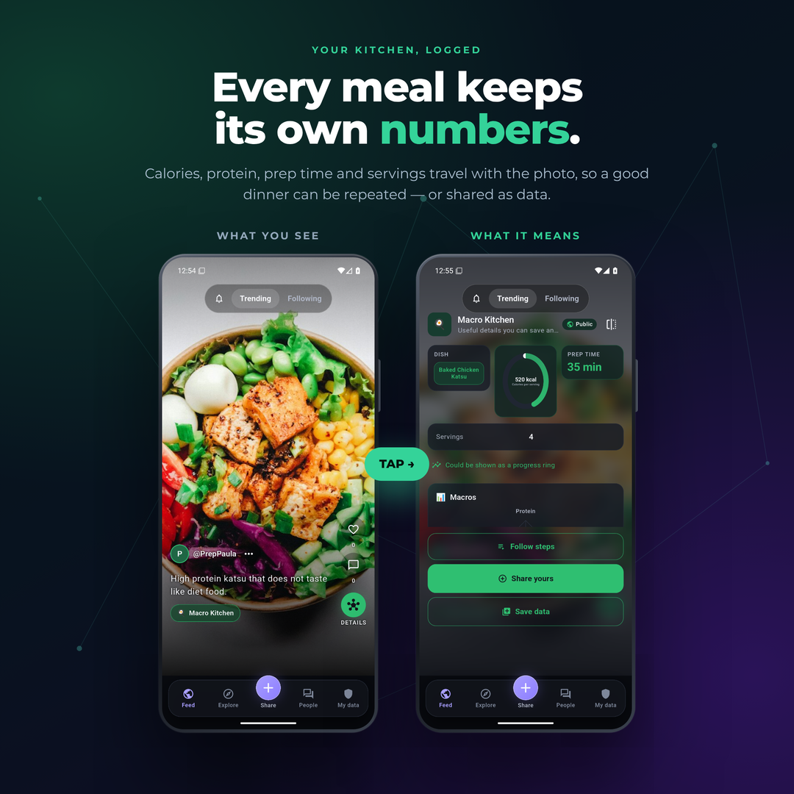
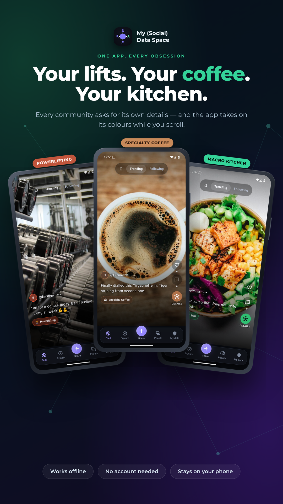

Your coffee, logged
Dose, yield, extraction — the details behind the shot, kept with the picture instead of lost in a notebook.
Structured social · Android
Keep what you measure on your own phone, and share it with the people you choose — never with a platform.

Most apps that let you record something keep the record. This one keeps it on your phone instead — and makes sure numbers stay numbers, so they can be charted, compared and checked.
A workout, a coffee brew, a reef tank reading. You say once which fields an entry has — or join a topic and use the form its community already wrote.
Every entry after that is structured. Add a photo if you like; the numbers travel with it. Read values straight off a screenshot instead of typing them again.
Nothing leaves until you choose. Send an entry directly to a phone nearby, or publish it to a topic — and the app tells you what a post carries before it goes.
Open any card and the picture gives way to the data behind it. Save the data, not a screenshot.

Dose, yield, extraction — the details behind the shot, kept with the picture instead of lost in a notebook.

Calories, protein, prep time and servings travel with the photo, so a good dinner can be repeated — or shared as data.

One app, every obsession
Every community asks for its own details, and the app takes on its colours while you scroll. Join a topic to see what other people record in the same shape, and to talk about it. Make your own, describe its fields, and share the form so somebody else can record the same way. Comparisons are computed from entries people chose to publish — never from anything harvested.
Your data
There is no account on a server, nothing is uploaded in the background, and there is no advertising identifier anywhere in the build. Sharing is a separate decision, every time.
Stored on this deviceYour entries, drafts, messages and keys live in a database on your phone. It works entirely offline — verified on a real handset with the radios off.
No account, no sign-inYour identity is a key created on your device. There is nothing to register, and nobody holds a copy of your data on your behalf.
Nothing uploaded in the backgroundThings leave only when you share them, and they go where you sent them: directly to a phone nearby, or to a community service you connected yourself. A community service is something you connect yourself, after installing — here is how.
Encrypted on the wayNearby sharing runs over an encrypted connection between the two phones. A message or share addressed to one person is sealed to that recipient, so a service carrying it cannot read it.
No analytics, no adsThere is no analytics SDK and no advertising identifier. Text recognition from screenshots runs on the device, with its diagnostics upload removed.
Delete it all, completelyDelete your account and the app erases everything on this device — entries, messages, keys, identity. It cannot reach copies other people already received, and it says so.
The app declares what can leave your phone, and why, in its privacy policy — including the two things to know before you publish: pictures you publish are stored where anyone holding the link can fetch them, and a community service you connect keeps what it was given. How to delete your data.
Free, no ads, no account. Record the things you actually track, and share them with people — not with a platform.